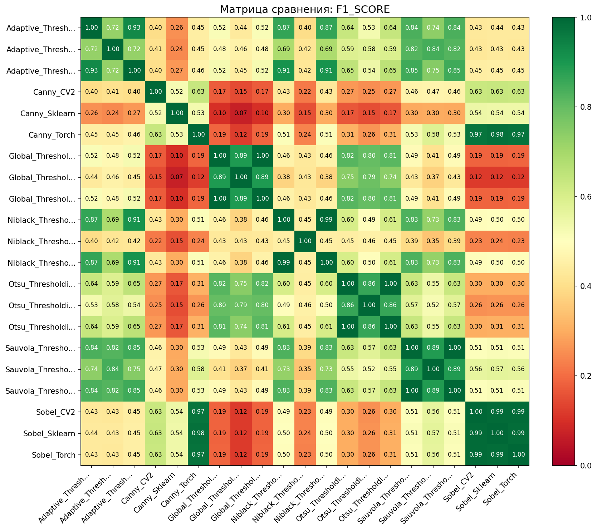
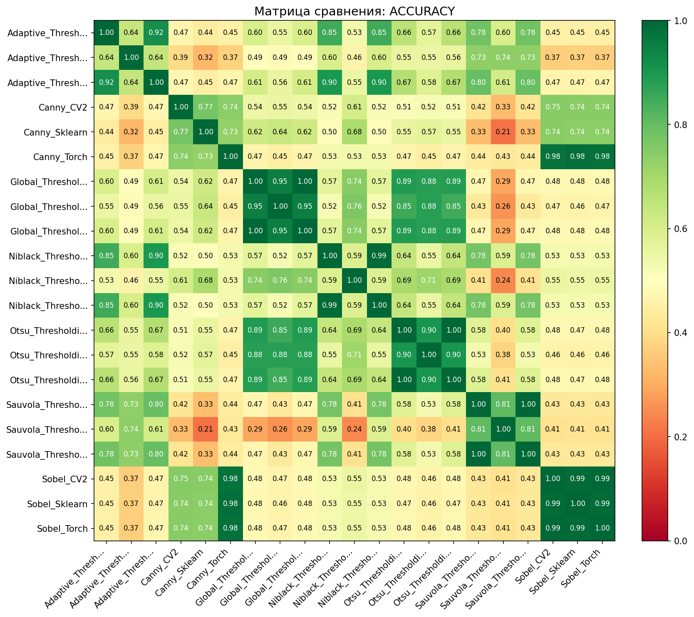
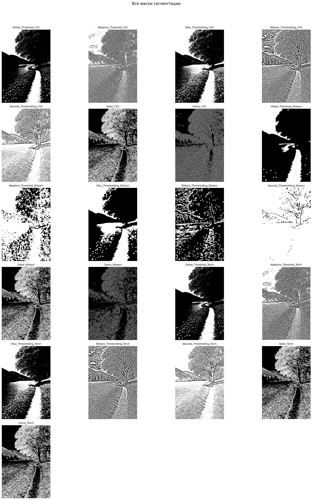

Дата: 2026-03-19 10:13:16
Всего методов: 21
Тип сравнения: all_vs_all
Референсный метод: Нет (все со всеми)



Сравнение всех со всеми
| Метод | Площадь маски | Покрытие | Время (с) |
|---|---|---|---|
| Sauvola_Thresholding_Sklearn | 588,708 | 95.8% | 0.059 |
| Sauvola_Thresholding_CV2 | 475,514 | 77.4% | 0.003 |
| Sauvola_Thresholding_Torch | 475,499 | 77.4% | 0.216 |
| Adaptive_Threshold_Sklearn | 443,927 | 72.3% | 0.053 |
| Adaptive_Threshold_Torch | 354,824 | 57.8% | 0.004 |
| Adaptive_Threshold_CV2 | 353,499 | 57.5% | 0.002 |
| Niblack_Thresholding_Torch | 338,004 | 55.0% | 0.215 |
| Niblack_Thresholding_CV2 | 337,614 | 55.0% | 0.003 |
| Canny_Torch | 252,138 | 41.0% | 0.003 |
| Sobel_Sklearn | 241,915 | 39.4% | 0.010 |
| Sobel_Torch | 239,332 | 39.0% | 0.004 |
| Sobel_CV2 | 237,052 | 38.6% | 0.005 |
| Otsu_Thresholding_Torch | 223,798 | 36.4% | 0.004 |
| Otsu_Thresholding_CV2 | 221,612 | 36.1% | 0.001 |
| Otsu_Thresholding_Sklearn | 206,784 | 33.7% | 0.045 |
| Canny_CV2 | 186,403 | 30.3% | 0.001 |
| Global_Threshold_CV2 | 153,393 | 25.0% | 0.001 |
| Global_Threshold_Torch | 153,393 | 25.0% | 0.006 |
| Global_Threshold_Sklearn | 134,126 | 21.8% | 0.044 |
| Niblack_Thresholding_Sklearn | 123,140 | 20.0% | 0.060 |
| Canny_Sklearn | 106,258 | 17.3% | 0.030 |